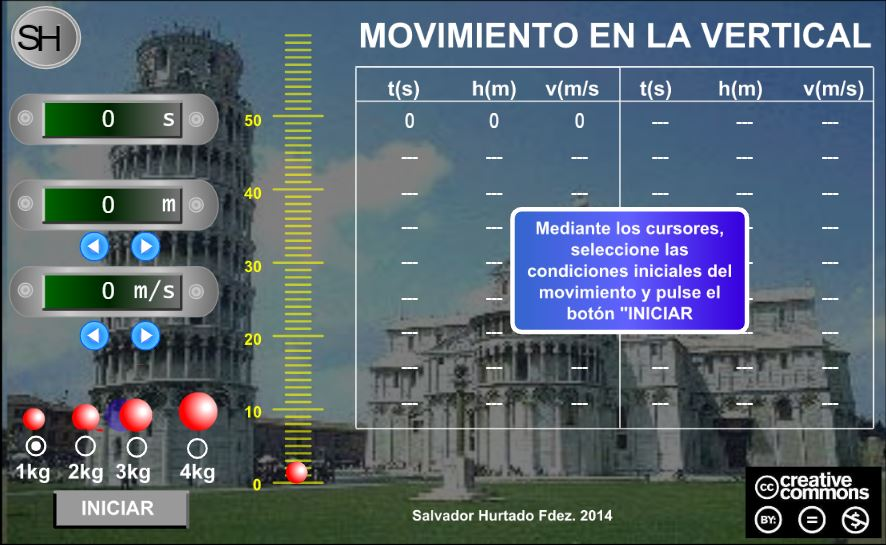

Conceptos generales
Cinemática
Dinámica
Electrostática
Electrodinámica
Termodinámica
Tiro verticalEl tiro vertical es el movimiento que describe un cuerpo cuando es lanzado verticalmente hacia arriba. Es contrario a la caída libre.

En el tiro vertical el cuerpo tiene una velocidad inicial mayor que cero y su velocidad va disminuyendo conforme transcurre el tiempo por efecto de la fuerza de gravedad que se ejerce en sentido contrario al eje Y, hasta que su velocidad final es cero.
En el tiro vertical debido a que el objeto se desplaza en sentido positivo al eje Y, considerar como:
Negativo el valor de la aceleración de la gravedad g = –9.8 m/s2
Positivo el valor de la altura
Positivo el valor de las velocidadades
Cuando el objeto alcanza su maxima altura se detiene Vf = 0.
Una característica importante del tiro vertical es que, no importa el peso que tengan los objetos, si se lanzan con la misma velocidad inicial, todos alcanzaran la misma altura y al mismo tiempo.
Las ecuaciones son las mismas que para la caida libre, solo recordar las consideraciones anteriormente listadas.
Para calcular la velocidad final conociendo el tiempo.
\(\displaystyle \vec{v}_{f}=\vec{v}_{i} + \left(g \right)\left(t\right) \)
Para calcular la velocidad final conociendo la altura.
\(\displaystyle \vec{v}_{f}= \sqrt{\left( \vec{v}_{i} \right)^{2} +2\left(g \right)\left(h\right)} \)
Para calcular la altura a la cual llega el objeto.
\(\displaystyle h= \left(\vec{v}_{i} \right)\left(t\right) +\frac{\left( g\right) \left(t\right)^{2}}{2} \)
\(\displaystyle h=\frac{{\left(\vec{v}_{f}\right)}^{2}-{\left(\vec{v}_{i}\right)}^{2}}{2\cdot g} \)
\(\displaystyle h=\left(\frac{\vec{v}_{f}+\vec{v}_{i}}{2}\right)\cdot t \)
Para calcular el tiempo de subida en función de la velocidad final.
\(\displaystyle t=\frac{\vec{v}_{f}-\vec{v}_{i}}{g} \)
Para calcular el tiempo de subida en función de la altura.
\(\displaystyle t=\sqrt{-\frac{2h}{g}} \)
Ejercicio 1. Un balón de voleibol que se encuentra al nivel del suelo es lanzado verticalmente hacia arriba con una velocidad de 29.4 m/s. Calcula
a) ¿Qué altura habrá subido al primer segundo?
b) ¿Qué velocidad llevará al primer segundo?
c) ¿Qué altura máxima alcanzará?
d) ¿Qué tiempo tardara en subir?
e) ¿Cuánto tiempo durará en el aire?
Datos
Vi = 29.4 m/s
g = –9.8 m/s2
Vf = ?
h = ?
t = ?
taire = ?
Inciso (a). Se pide calcular la altura después de t = 1s
Fórmula
\(\displaystyle h=\left(\vec{v}_{i} \right) \left(t\right) +\frac{\left(g\right)\left(t\right)^{2}}{2} \)
Sustitución
\(\displaystyle h=\left(29.4\;m/s\right) \left(1\;s\right) +\frac{\left(-9.8\;m/s^2\right) \left(1\;s\right)^{2}}{2} \)
\(\displaystyle h=29.4\;m+ \frac{\left(-9.8\;m/s^2\right) \left(1\;s^2\right)}{2} \)
\(\displaystyle h=29.4\;m+ \frac{-9.8\;m}{2} \)
\(\displaystyle h=29.4\;m-4.9\;m \)
Resultados
\(\displaystyle h=24.5\;m\)
Inciso (b). Se pide calcular la velocidad final después de t = 1s.
Fórmula
\(\displaystyle \vec{v}_{f}=\vec{v}_{i} + \left(g\right)\left(t\right) \)
Sustitución
\(\displaystyle \vec{v}_{f}=29.4\;m/s + \left(-9.8\;m/s^2 \right)\left(1\;s\right) \)
\(\displaystyle \vec{v}_{f}=29.4\;m/s - 9.8\;m/s \)
Resultados
\(\displaystyle \vec{v}_{f}={19.6\;m/s} \)
Inciso (c).
Fórmula
\(\displaystyle h_{max}=\frac{{\left(\vec{v}_{f}\right)}^{2}-{\left(\vec{v}_{i}\right)}^{2}}{2\cdot g} \)
Sustitución
\(\displaystyle h_{max}=\frac{{\left(0\,m/s\right)}^{2}-{\left(29.4\,m/s\right)}^{2}}{2\cdot (-9.8\,m/s^2)} \)
\(\displaystyle h_{max}=-\frac{864.36\;m^2/s^{2}}{-19.6\;m/s^2} \)
\(\displaystyle h_{max}=-\left(-44.1\;m\right) \)
Resultados
\(\displaystyle h_{max}=44.1\;m \)
Inciso (d). Nos piden el tiempo cuando se alcanza la altura máxima
Fórmula
\(\displaystyle t=\frac{\left(\vec{v}_{f} \;-\;\vec{v}_{i} \right)}{g} \)
Sustitución
\(\displaystyle t=\frac{\left(0\;m/s\;-\;29.4\;m/s\right)} {-9.8\;m/s^2} \)
\(\displaystyle t=\frac{-\;29.4\;m/s}{-9.8\;m/s^2} \)
Resultados
\(\displaystyle t=3 \,s \)
Inciso (e). Nos piden el tiempo total para subir y bajar. Para un objeto que se lanza verticalmente y cae al mismo punto desde el que fue lanzado el tiempo de subida es igual al tiempo de bajada.
Fórmula
\(\displaystyle {t}_{aire}={t}_{subida}+{t}_{bajada} \)
Como
\(\displaystyle {t}_{subida}={t}_{bajada} \)
entonces
\(\displaystyle {t}_{aire}=2\cdot {t}_{subida} \)
Sustitución
\(\displaystyle {t}_{aire}=2\cdot (3\,s) \)
Resultados
\(\displaystyle {t}_{aire}= (6\,s) \)
Haz click en el siguiente enlace para ver tutoriales relacionados con el tema.